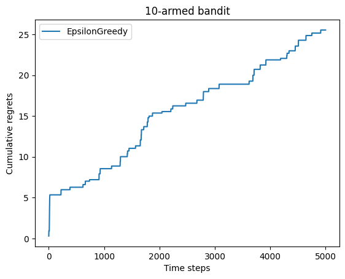
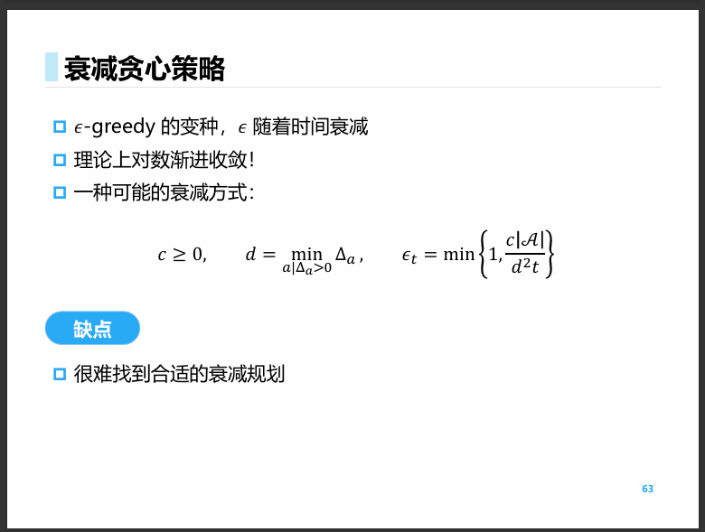
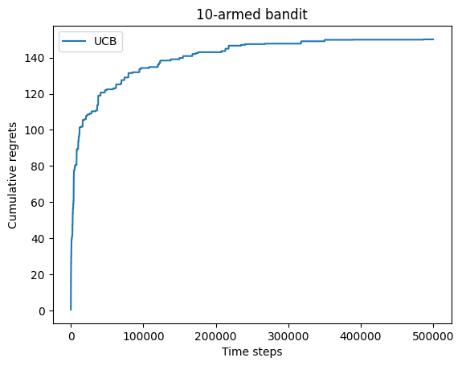
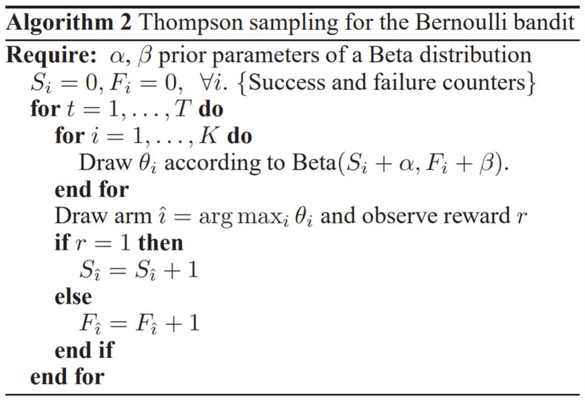
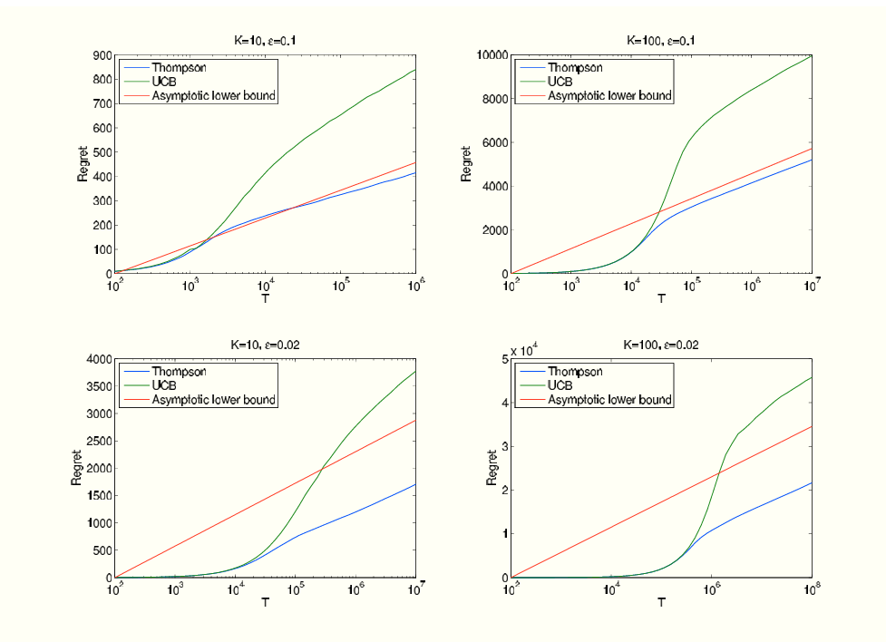

RL学习笔记¶
📖 阅读信息
阅读时间约 21 分钟 | 约 2974 字 | 约 61 个公式 | 没有代码，请放心食用
缘起¶
笔者看动手学强化学习看得要睡着了，因此准备在这里整理一下笔记让自己打起精神。天天看网上 RL 来 RL 去的，不知所云，因此有空就来更新一下~
笔记主要是针对上面那本教材的。如果本学期或以后有时间，可以搓一个自动躲弹幕的 THARL (TouHou Agent through Reinforced Learning) 项目来玩玩。
第一章¶
简单回顾一下一般的有监督学习任务，我们的目标是经验风险最小化，也就是
这里的 \(\theta\) 就是网络参数，也就是我们的优化对象；\(x,t\sim p(x,t)\) 就是从样本与标签的联合分布中采样一个（样本，标签）对，作为我们的训练数据。在这个数据上面，我们需要定义一个损失函数 \(\mathcal{L}(\theta;x,t)\) 用来表征我们的网络 \(\theta\) 能不能尽可能将 \(x\) 映射到 \(t\)。最后我们要针对全部（或者对于基于小批量梯度的优化器而言，只需要针对一部分）的经验样本计算出来的损失对其进行最小化。
而强化学习和它有相似也有不同。一个 Agent 处于某个状态 \(s_{t-1}\)，基于自我策略 \(\pi\) 做出动作 \(a_i\)，从而转移到新的状态 \(s_t\)。这个过程会得到对应的奖励或者惩罚，这种反馈是基于环境固有的。譬如一个下国际象棋的 Agent，会选择将某个位置的国王移到另外一个位置，如果它能够以此避开将军，则能获得一点奖励；如果不能避开或者陷入了不合法的移动，则获得负奖励也就是惩罚（这里的奖励是基于决策的）。通过象棋规则带来的约束，就可以使得该 Agent 高效进行学习规则。更进一步，通过设计子力，棋局价值等更高级的奖励（这里的奖励是基于状态的），我们就可以让这个 Agent 学习如何赢棋，最后打败国际象棋大师卡斯帕罗夫……
刚刚的过程就描述了 RL 的一步过程，模型探索并从错误中学习。我们现在就可以明确 RL 的目标所在——通过这样一个过程，不断优化策略使得自己每一次行动都能规避惩罚并获取最多奖励。当然模型的策略并不一定会均等地覆盖所有可能的动作空间，而是对不同的状态和行动有不同的概率出现，也就可以建模成一个分布，被称作其策略的占用度量 \(\rho_\pi\)。我们希望在这个活动范围内，能够以优化策略的方式最大化奖励 \(r\)，也就是
很像吧，其实形式上可以说和有监督学习没有什么区别，但是区别还是比较大，比如说一个模型可以探索的策略的占用度量会随着策略改变而改变；而我们也不是基于奖励函数直接就来算梯度做梯度上升（有的操作可能没梯度呢）。
不过其实最大的区别是序列性，因为强化学习一步步的转移是有序的，不像端到端学习那样可以随机抽样本算梯度。
第二章¶
问题的引入¶
本章聚焦 RL 的第一个经典问题：多臂老虎机问题。但是我觉得这个其实不像老虎机，因为要老虎机付费使用但是这个问题赠送了免费额度，因此不如把这个问题建模如下：
你作为一个新人，被舞萌痴好友安利来到了机厅。舞萌的新人可以有免费打歌的额度，我们考虑你有 \(T\) 次机会免费打歌。由于你是新人并不理解舞萌的谱面难度如何，但是那些简单铺面跟着按还是可以的，因此对于 \(K\) 个谱面，你有 \(p_i\) 的概率通过（\(i=1\dots K\)），也就是服从伯努利分布，但是你并不知道这个概率具体的值，只有每一次玩某个谱面，通过和不通过的区别。
你仅仅是体验，所以只要通过谱面即可，现在你想要使你合计获得的的通过次数最大化，可以选择什么策略？
权衡¶
这里的权衡很简单，一方面，我们会消耗有限的机会去获取对谱面通过概率的估计值 \(\hat p_i\)，但是一旦我们足够相信自己的估计，我们就可以逮着那个最大概率使劲薅~
我们可以控制一个比例 \(\epsilon\) 来权衡到底是走稳健流去接着打自己目前估计出概率最高的谱子，或者探索一下其他谱子万一自己只是一开始手感不好呢……
所以我们每一步生成一个随机数 \(r\in U(0,1)\)，然后根据 \(\epsilon\)，进行下面的决策：
当然每一次选择之后要更新估计的概率池子。
我们怎么看这个策略是否足够好呢，其实可以量化它与我们先验知道的最优解之间的差距，这被称作懊悔（Regret）。
这个算法只有一个超参数可调，也就是 \(\epsilon\)，首先我们可能会选择一个固定的值：

但是可见，随着尝试次数的增加，懊悔值也在增加！为什么？当我们积累了足够多的尝试之后，其实已经有足够理由去认为频率是概率的合理估计了，这个时候还以一个固定比例进行随机尝试，就很愚蠢了，假设我们的估计已经收敛，但是每一步增长的懊悔值期望为 \(\epsilon\times\dfrac{K-1}{K}\)，则总的懊悔值就是 \(\epsilon T\) 的量级，随着尝试次数线性增长。
那怎么搞呢？我们肯定是让 \(\epsilon\) 衰减，但是怎么衰减呢？
我们把总懊悔分割成两个部分，第一个是随机抽出来的懊悔，第二个是固定抽出来的懊悔。对于能够收敛到最优概率的情况，总懊悔就取决于第一部分，而第一部分能产生的懊悔期望值是固定可以计算的，即：
也就是说，我们选取 \(\epsilon_i\) 作为收敛的级数，就可以让累积懊悔也收敛。
上面那个式子可以用实验验证，刚刚我们看到了 \(\epsilon\) 是常数的情况，如果换成 \(\epsilon_i=1/i\)，就可见累积懊悔是对数级增长，而换成 \(\epsilon_i=1/i^2\) 或者 \(\epsilon_i=\exp(-i)\) 就可以观察到累积懊悔收敛到常数。
但是前提是能够收敛到最优概率上！

所以我认为课件上“很难找到合适的衰减规划”这句话只说了一半。这个问题的概率可能更加不确定，需要更稳健的打法（毕竟刚刚的分析建立在第二部分的懊悔收敛到0的情况，如果衰减太快可能没法收敛到最优，不能保证收敛性），而在差异大，更简单的情况下，我觉得取指数衰减基本上可以通杀了。
但问题没有消失：如果一开始陷入局部最优了，那你这不就炸了吗，所以有没有更稳健的打法，能够保证累积懊悔能够收敛到一个趋势呢。
平衡探索和利用¶
下面介绍 UCB 算法，也就是置信上界法，在引入这个方法之前，我们还是回到之前的那个问题，即：当我们有一系列抽样结果之后，我们是将其视作真实分布进行“利用”，还是认为证据不足而去“探索”新的数据呢？
这就引出了一个问题：怎么样刻画这个“认为证据不足”？也就是在多大的概率下，我们可以断言这个建模足够拟合原有分布？
我们有 Hoeffding's inequality，它能告诉我们答案：考虑 \([0,1]\) 内独立同分布的随机变量 \(x_1,\dots, x_n\)，以样本均值 \(\bar x\) 为原分布均值 \(\mu\) 的建模，并且引入容差或者说不确定度 \(u\)，则有以下的概率不等式：
把这个不等式翻译到问题里面，也就是对于某谱面 \(a\)，为了控制估计值和真实值之差大于不确定度的概率 \(P(\mu_a >\bar x_a + u_a)\)，我们可以控制其上界 \(\exp(-2nu_a^2)\)，把它限制在容忍的概率值 \(p\) 内。
既然我们已经能够控制逼近均值的精度，那我们可以直接利用估计值的最大值 \(\mathrm{arg}\max_a\bar x_a + u_a\) 来做选择，这就和前面的概率贪心做法有本质不同：即使最坏情况 \(\exp(-2nu_a^2)=p\)，我们也可以取 \(u_a=\sqrt{- \dfrac{\log p}{2n}}\)，随着 \(n\) 的增长，让 \(p\to 0\) 就可以实现对分布精确均值的收敛。
这就是 UCB 算法的流程了。具体而言：
- 为了让 \(p\to 0\)，我们取 \(p=1/n\)，然后根据现有的均值计算这个期望奖励上界 \(U_a(t)=\bar x_a(t)+u(t)=\bar x_a(t)+\sqrt{\dfrac{\log n}{2(n+1)}}\)。
- 求使其最大的那个 \(i\) 作为选择。
- 选择后，更新均值为 \(\bar x_i(t+1)\)。
自然我们也可以改变均值和不确定度两者的配比。

课件里面给出了其累积懊悔是 \(O(\log n)\) 级别的结论。事实上，我们对比一下先前的讨论，可以看到虽然其时间复杂度更高，但是可以保证渐进收敛不会炸，如果把一开始那个随机 ε-贪心策略的不收敛情况考虑进来，其实累积的期望懊悔也是线性增长的。有没有可能有更好的算法呢？
没可能了。Lai 和 Robbins 已经证明了累积懊悔的下界是对数级的。我之前也考虑过让 \(p\) 趋于 \(0\) 的速度更快，理论和实验都表明但任何阶数更高的尝试都不能避免探索过少的问题。（如果想做实验的话可以把几个臂的概率差调小一点，这样就更容易让模型收敛到错误的臂上面）
也就是说这个问题是有解的，无论是 UCB 算法还是 ε-贪心策略，控制到对数阶就可以做到探索和利用的平衡。
教程最后还介绍了 Thompson 采样算法，其实有点像蒙特卡罗采样。刚刚我们是用样本均值估计实际分布均值，而这个算法是根据样本分布估计实际分布。我们的直觉是，\(\alpha+\beta -2\) 次抽样里面，出现了 \(\alpha-1\) 次通过和 \(\beta - 1\) 次不通过，每一次服从概率 \(p\) 的伯努利分布，那么总概率和 \(p^{\alpha-1}(1-p)^{\beta-1}\) 成比例。这个形式和 Beta 分布也是成比例的，为此可以选择利用 Beta 分布为目标的概率分布进行建模，然后求均值，就可以找 argmax 做决策了。

这个算法的想法就更精妙一些，不是先解耦探索和利用两步再进行平衡，而是通过引入一个优秀的归纳偏置，即 Beta 分布，而不同的抽取次数和结果对“探索”和“利用”的共同影响，自然在这个分布里面得到了一体化的建模。这个思想其实和从 GAN 到 VAE 的思想很像。
这篇文章表明了 Thompson 采样算法在阶数上也是渐进最优的，并且常数甚至还要低一些。

总结¶
这个名叫多臂老虎机的问题展示了强化学习需要权衡的一个问题，感性地理解就是选择更激进或更保守的策略，用术语讲就叫平衡探索和利用。在端到端学习中，我们遇到的类似问题是收敛到鞍点或局部最小，为此我们引入了随机性来解决——可以看到，在强化学习中，我们也只不过是换了种利用随机性的方式而已。